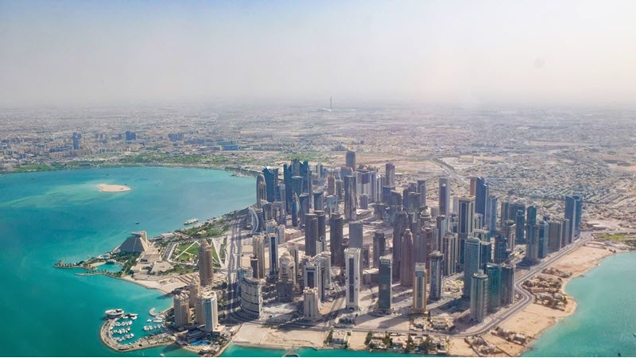

Doha, Qatar
Doha is Qatar's largest city and commercial centre. It has a population of 2.4 million.
Read more...Maintains the aspect ratio of an image in a card, while letting you resize the card.
Doha is Qatar's largest city and commercial centre. It has a population of 2.4 million.
Read more...